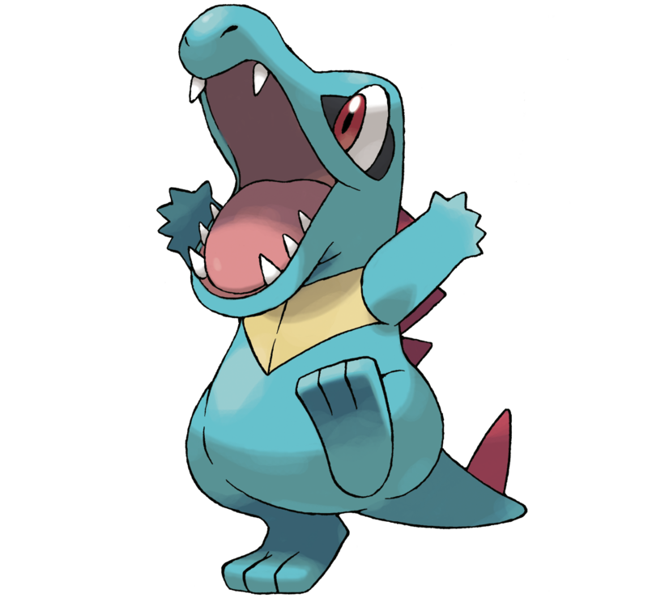

Docencia · Investigación · Fisioterapia
Herramientas para aprender e investigar
Un espacio para reunir las aplicaciones, cursos y materiales que he construido o seleccionado con el propósito de acompañar a los estudiantes del programa en su formación clínica e investigativa.
Herramientascreadas
Aplicaciones y materiales que desarrollo para apoyar la formación y la investigación en salud. Cada recurso indica su estado y el público al que se dirige.
Mirecomendación
Lecturas, recursos y publicaciones que recomiendo para seguir aprendiendo. Actualizaré este espacio cuando comparta una nueva recomendación.
Cargando recomendaciones…
Repositoriode recursos
Selección de guías, bases de datos y programas de libre acceso que recomiendo para el trabajo académico, junto con los materiales propios del curso.
Código abierto. Las herramientas se publican en GitHub para que puedan consultarse, reutilizarse y mejorarse.
Ver repositorio en GitHub ↗Investigacióny semillero
El trabajo del grupo se centra en el ejercicio como determinante de la salud cerebral y funcional a lo largo del curso de vida.
- Salud cerebral y deterioro cognitivo leveEfectos del ejercicio sobre la función cognitiva en personas mayores.
- Entrenamiento funcional de alta intensidadRelación dosis respuesta y seguridad del HIFT en población mayor.
- Prescripción del ejercicio en el adulto mayorIndividualización de la carga en presencia de enfermedades crónicas.
- Educación en salud mediada por tecnologíaTutores de inteligencia artificial y lectura crítica en educación superior.
Participe en investigación
Los estudiantes interesados en el semillero o en desarrollar su trabajo de grado en estas líneas pueden escribir al correo de contacto indicando su semestre y tema de interés.
Proyectos en curso
- Intensidad del ejercicio y cognición en adultos mayores. Convocatoria Desarrollo Interno 2026.
- FisioTIPS, plataforma de educación en fisioterapia musculoesquelética con tutores de IA. Convocatoria VRI 003 de 2026.
Perfiles académicos
Contactoy sugerencias
Si tiene una idea para una nueva herramienta, encontró un error o quiere proponer un recurso para el repositorio, escríbame.

Ft. Diego Fernando Afanador Restrepo. Profesor de Planta de la Universidad del Cauca. Este es mi espacio personal para compartir herramientas y recursos de docencia e investigación.